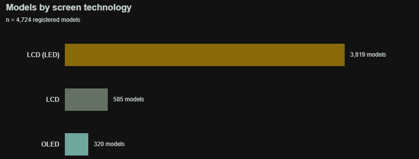
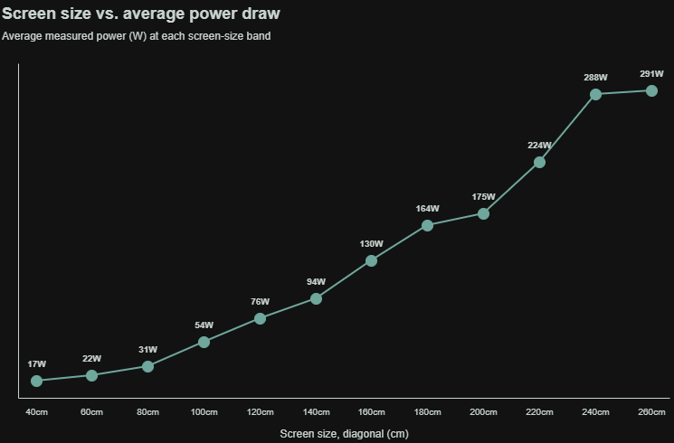
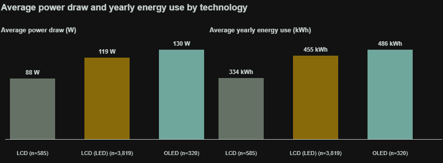
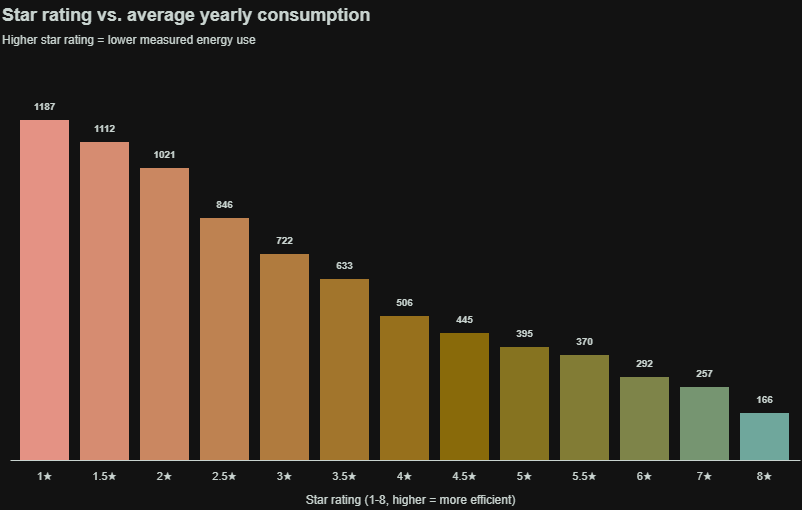

Two same-size TVs can use five times more power than each other
Screen size looks like the obvious driver of a TV's running cost. Across every model registered for sale in Australia, the numbers say technology and star rating matter just as much — sometimes more. This page walks through what the full Energy Rating registration dataset actually shows.
the gap between the most and least efficient 60–65″ televisions in the dataset — 207 kWh/year at the low end, 1,135 kWh/year at the high end
Three screen technologies, one register
Every model here was submitted for Australian Energy Rating approval and is publicly registered — this reflects registrations, not sales, so a popular model resubmitted for several sizes appears more than once. LED-backlit LCD panels dominate the current market; OLED and older non-LED LCD panels make up smaller shares.

Bigger screens do draw more power — but the spread is wide
Each point is one registered model: screen diagonal (cm) against its measured average on-mode power draw (W). The dark line traces the average power at each size — notice how far individual models sit above or below it.

At almost any given size, the best and worst performers differ by a factor of two or more. Size sets a ceiling on power draw — it doesn't determine it.
OLED looks efficient per inch, but not per set
Averaged across all registered sizes, OLED panels draw more power and use more energy per year than LED-backlit LCDs — largely because OLED is concentrated in larger, premium sizes. Older non-LED LCD panels are the lowest-power group, but are now a shrinking, mostly smaller-screen category.

Averages mix screen sizes unevenly across technologies, so read these alongside the size chart above rather than as "OLED is worse."
The star rating is doing its job
Australia's Energy Rating label runs from 1 to 8 stars (higher is better; above 6 stars is rare, reserved for the most efficient sets). Plotted against actual measured yearly consumption, the rating tracks real-world energy use closely and consistently.

Moving from a 3-star to a 6-star model cuts average yearly consumption from about 720 kWh to 290 kWh — a saving of well over half, for comparable screens.
What this dataset can't tell you
- It covers models registered for the Australian market — not global availability, and not sales volumes, so common models aren't weighted more heavily than rare ones.
- Power figures come from standardised lab tests (a fixed test video, fixed brightness settings). Real brightness, HDR content, and usage hours will shift actual consumption up or down.
- Some fields (brand website, tuner type) were incomplete and excluded; the size, power, technology, rating and consumption fields used here had no missing values.
- Snapshot only: this reflects registrations current as of February 2026, not the full historical record.
Charts use linear axes with true-zero baselines throughout, and every average is shown alongside its sample size so small groups aren't overstated.
Buying advice, from the data
If you're shopping for a TV: the star rating is a reliable shortcut, screen size sets a rough budget for power draw, and within any size and technology there's still a wide efficiency gap worth checking model-by-model.
The 5.5× gap isn't an outlier
The gap between the best and worst 60–65″ sets shown at the top of this page is typical of the spread found at almost every screen size in this dataset — check the label, not just the size.
The storyboard behind this page
Before building any charts, the narrative was planned as a six-step storyboard — moving from the assumption most buyers start with, through the evidence, to a concrete recommendation. Each note below maps directly onto a section of this page.